<link rel="import" href="symposium-card/symposium-page-card.html">

<dom-module id="symposium-info">
  <template>
    <style include="iron-flex iron-flex-alignment"></style>
    <style>
      :host {
        display: block;
      }

      h1 {
        margin-top: 0;
      }

      .banner {
          text-align: center;
          margin: -16px -16px 0;
          width: calc(100% + 16px + 16px);
          background-color: #231657;
      }

      .banner img {
        margin-top: 10px;
        width: 95%;
        height: auto;
      }

      .photo {
        padding: 0 5px;
      }

      .photo img {
        max-width: 100%;
      }
    </style>

    <symposium-page-card>
      <div class="banner">
        
      </div>

      <h1>Information</h1>

      <p> On the 1st of May, our symposium about Cyber Security will take place. This symposium, organized by the symposium committee of W.I.S.V. 'Christiaan Huygens' will take place in Theater de Veste, Delft.</p>
    
      <p>During the day, there will be two separated tracks, one specialized on the mathematical aspects and one specialized on computer science side.</p>
    
      <p>At the end of the day, we will finish with a discussion about the ethics behind cyber security, followed by drinks and the possibility to network and share thoughts on the discussed topics. </p>

    <div class="photos layout horizontal">
      <div class="flex photo">
        
      </div>
      <div class="flex photo">
        
      </div>
    </div>
    </symposium-page-card>
  
  </template>
  <script>
    Polymer({
      is: 'symposium-info',

      properties: {
      },
    });
  </script>
</dom-module>
